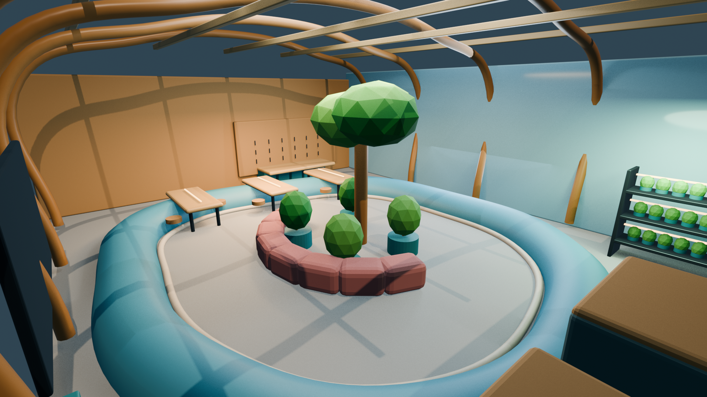
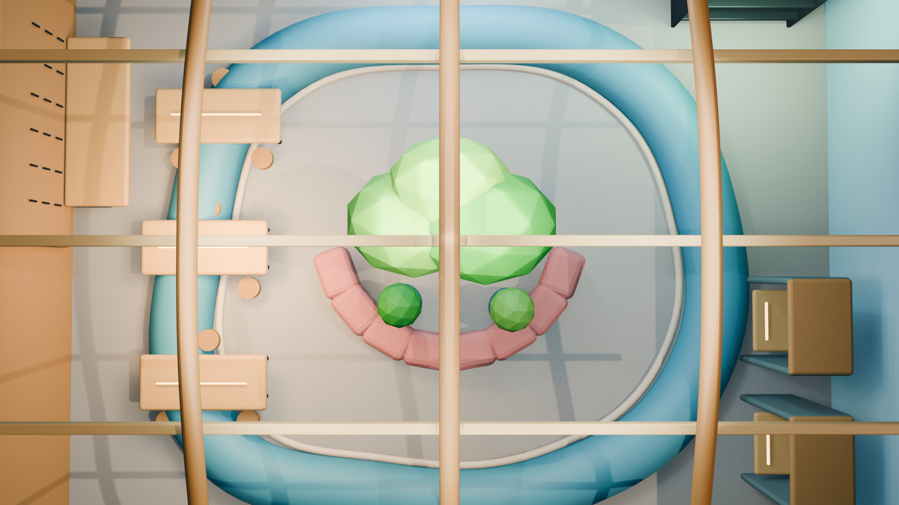
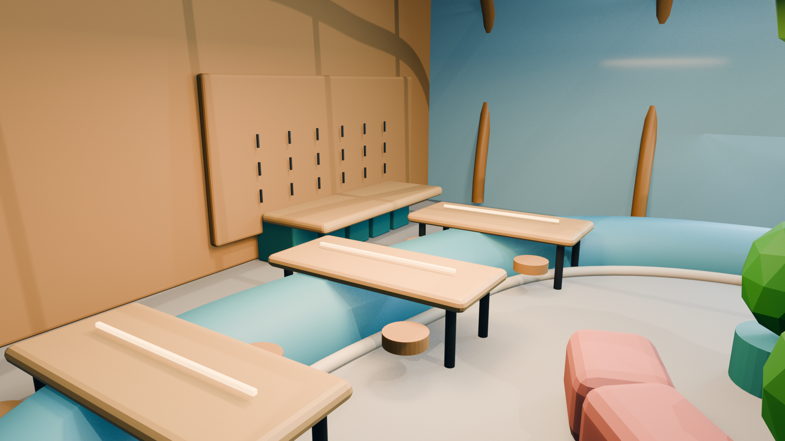
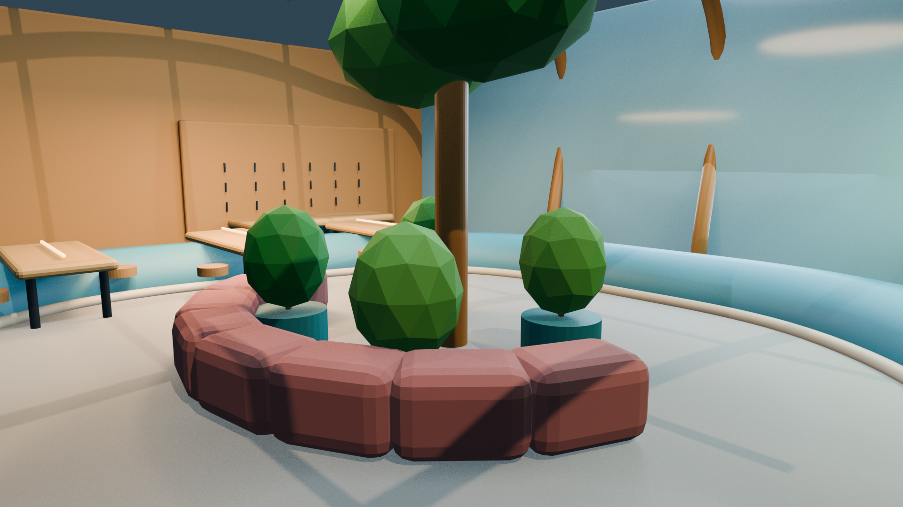
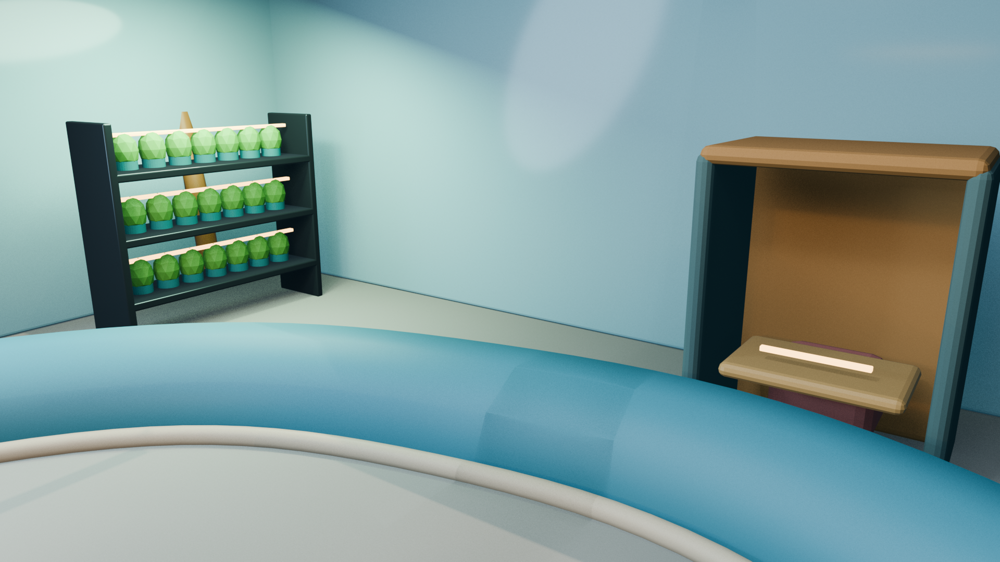
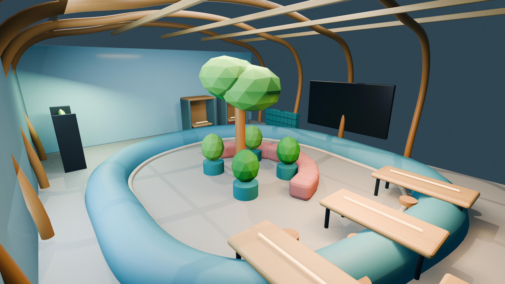

Keep sightlines open
Low furniture and a shared canopy make each activity visible and invite movement between zones.
A shared design space where making, repair, rest, and urban growing coexist beneath one continuous structure.

The Canopy Loop asks what a design studio could become if focused work, hands-on repair, growing, and rest were treated as equally valuable parts of a creative practice.
The intended experience is a gradual shift between energy levels. Visitors can move from the social commons to shared work surfaces, then toward quieter pods and planted edges without ever feeling cut off from the larger community.
Low furniture and a shared canopy make each activity visible and invite movement between zones.
Active making sits apart from quieter reflection while remaining part of one connected environment.
Planting is not decoration; it marks transitions, softens the interior, and supports the restorative edge.
Five views test how the environment reads from overview to human scale.





The earlier version established the mood and key activities, but the final refinement needed a clearer hierarchy. I treated the central loop as the organizing gesture, strengthened the identity of each zone, and used multiple camera studies to evaluate circulation and visibility.
The most important revision was not adding more detail—it was making the main idea easier to read. The continuous loop became a useful constraint: every zone had to contribute to the whole while retaining a distinct rhythm. The final result is more coherent, though future development would include accessibility studies, material tests, and feedback from people using the space.